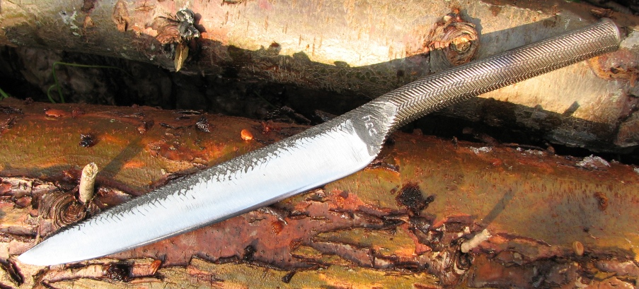
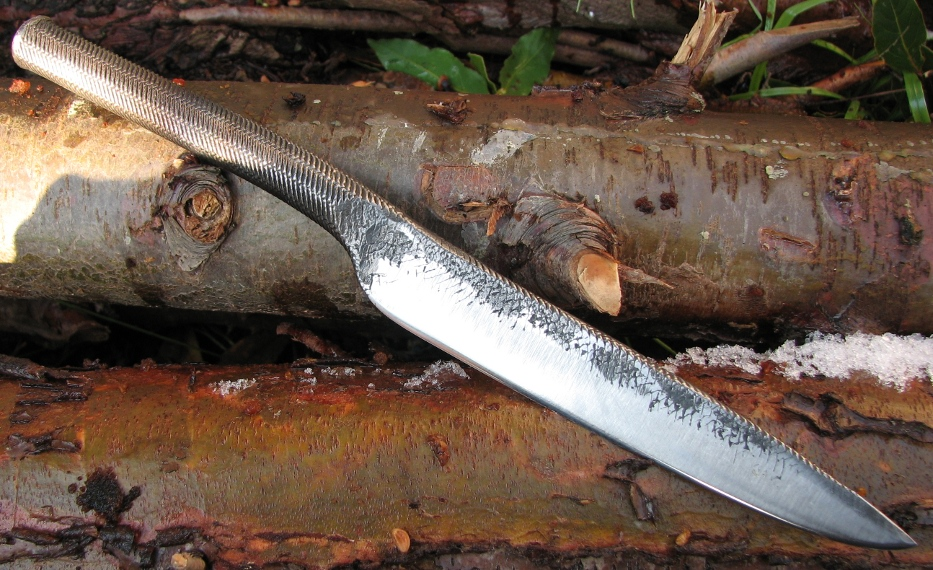
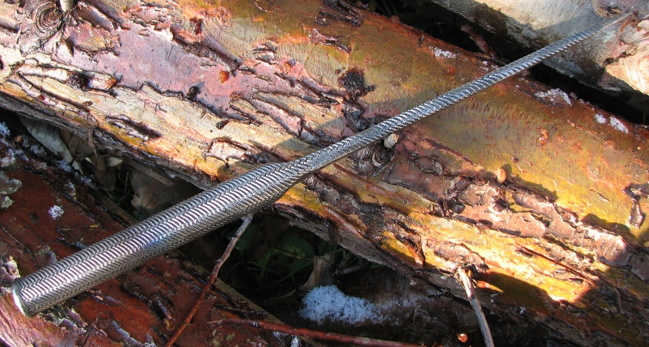

an integral knife forged from a file with a six inch edge
January 2010
I have entered another KITH (knife in a hat) which is to be drawn in January. The theme was to forge a knife from a file. I decided that firstly, I wanted it to be obvious that the knife came from a file. And secondly, I wanted to forge another integral knife.
Last time I was at the council tip, I picked up a big box of old files and punches for five pounds and it contained a large (blunt!) round file. I decided it would make good stock for this project.
I used a fullering tool to forge the start of the handle, and then using a ball pien hammer forged the blade shape. I was careful to try and leave the file teeth visible on the handle and the back of blade. I finished the end of the handle by carefully heating it and forging it to a rounded profile.
The blade is fully heat treated and tempered, and the handle is surprisingly comfortable. Here are some pictures:
 